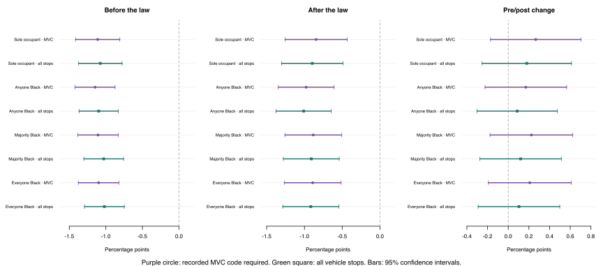
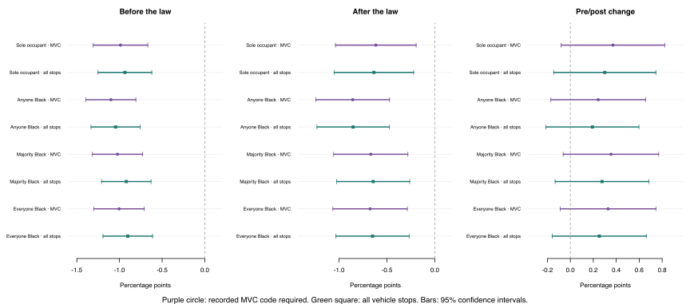

← Veil-of-darkness page · Experimental sensitivity analysis
Do the MVC and occupant rules change the result?
Negative values mean a smaller share of stops meeting that row’s Black-occupant definition after dark. The final panel tests whether that gap changed after Driving Equality. Bars are 95% confidence intervals; a change interval crossing zero does not establish a pre/post difference.
Non-Latino Black/white occupants only

| Definition | Stop reasons | Stops | Before | After | Change [95% CI] |
|---|
| Sole occupant | Recorded MVC | 468,478 | -1.11 | -0.85 | +0.27 [-0.17, +0.70] |
| Sole occupant | All vehicle stops | 483,531 | -1.08 | -0.90 | +0.18 [-0.25, +0.61] |
| Anyone Black | Recorded MVC | 537,475 | -1.15 | -0.98 | +0.17 [-0.22, +0.56] |
| Anyone Black | All vehicle stops | 557,042 | -1.10 | -1.01 | +0.09 [-0.30, +0.48] |
| Majority Black | Recorded MVC | 537,475 | -1.11 | -0.88 | +0.22 [-0.18, +0.62] |
| Majority Black | All vehicle stops | 557,042 | -1.03 | -0.91 | +0.12 [-0.27, +0.51] |
| Everyone Black | Recorded MVC | 537,475 | -1.10 | -0.89 | +0.21 [-0.19, +0.61] |
| Everyone Black | All vehicle stops | 557,042 | -1.02 | -0.92 | +0.10 [-0.29, +0.50] |
Occupants of all races

| Definition | Stop reasons | Stops | Before | After | Change [95% CI] |
|---|
| Sole occupant | Recorded MVC | 561,259 | -0.99 | -0.62 | +0.37 [-0.08, +0.82] |
| Sole occupant | All vehicle stops | 579,530 | -0.94 | -0.64 | +0.30 [-0.14, +0.74] |
| Anyone Black | Recorded MVC | 645,616 | -1.10 | -0.86 | +0.24 [-0.17, +0.66] |
| Anyone Black | All vehicle stops | 669,516 | -1.05 | -0.85 | +0.19 [-0.21, +0.60] |
| Majority Black | Recorded MVC | 645,616 | -1.02 | -0.67 | +0.35 [-0.06, +0.77] |
| Majority Black | All vehicle stops | 669,516 | -0.92 | -0.64 | +0.28 [-0.13, +0.68] |
| Everyone Black | Recorded MVC | 645,616 | -1.00 | -0.68 | +0.33 [-0.09, +0.75] |
| Everyone Black | All vehicle stops | 669,516 | -0.90 | -0.65 | +0.25 [-0.16, +0.66] |
What these comparisons include
Black means non-Latino Black in every specification. In the all-races version, the comparison includes every other recorded racial category. Every stop counts once. Majority means more than half; ties count as no Black majority. All recorded people must be adults with recorded age, gender and race. The three occupancy outcomes concern people recorded at the stop, not necessarily everyone in the car or the driver's race. Years: 2014–2019 and 2021–2025; the policy split is March 3, 2022. Controls and seasonality weights are held fixed across specifications. A recorded MVC code on any occupant satisfies the MVC rule; the literal NA counts as recorded.
The published reference was reproduced exactly. Its before/after gaps are −1.11 and −0.83 points, with a change of +0.28 [−0.16, +0.71]. The experiments explicitly group vehicle records only, adding 862 sole-occupant vehicle stops that the existing builder excluded through coincident pedestrian records and dropping one previously included observation (a net addition of 861). This moves the baseline period estimates by less than 0.02 points. The same vehicle-only grouping is used throughout this experiment.
These comparisons do not establish whether Driving Equality caused any change.